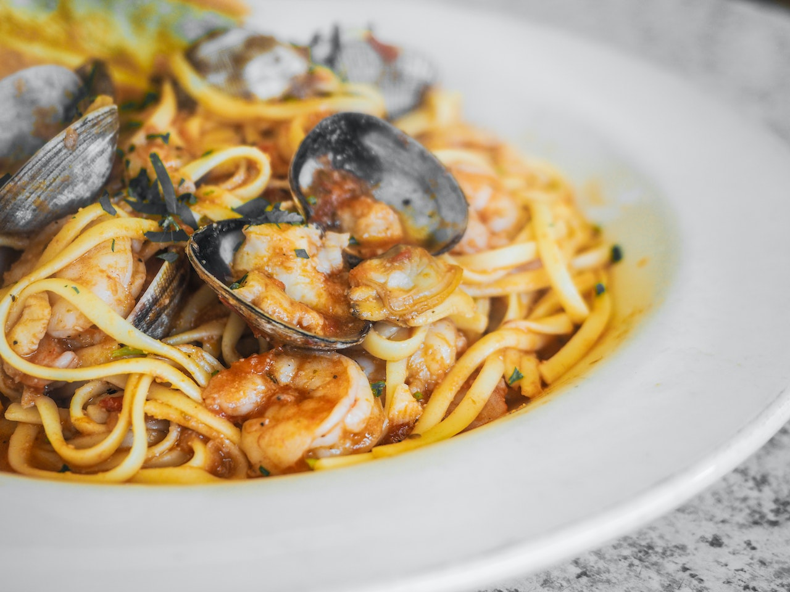

Spaghetti A La Paella

Description
The ultimate Spanish dish gets an Italian twist. This recipe should be on your must-try list.
Ingredients
- 750 g tahong
- 750 g clams (halaan)
- 1 1/2 cups water
- 300 g chicken, thigh, cut up
- 1/3 cup chorizo de bilbao, sliced
- 1/4 cup olive oil
- 1 kg pre-processed italian style spaghetti sauce
- 250 g prawns
- 1/4 tsp. salt
- 1/8 tsp. pepper
- 2/3 cup green peas, cooked/frozen
- 1/2 cup bell pepper, red, cut into strips
- 400 g spaghetti, cooked
- 1/4 cup cheese (optional), grated
Steps
- Boil tahong and halaan in water until shells open. Drain and reserve 3/4 cup broth. Discard half shells. Set aside.
- Saute chicken and chorizo in olive oil, Cover and cook over low heat for 10 minutes. Add broth, pre-processed italian style spaghetti sauce, prawns, salt and pepper to taste. Simmer for 8 minutes. Add green peas, tahong, halaan, and bell pepper. Allow to simmer. Pour over and mix with cooked spaghetti. Sprinkle with cheese, if desired.